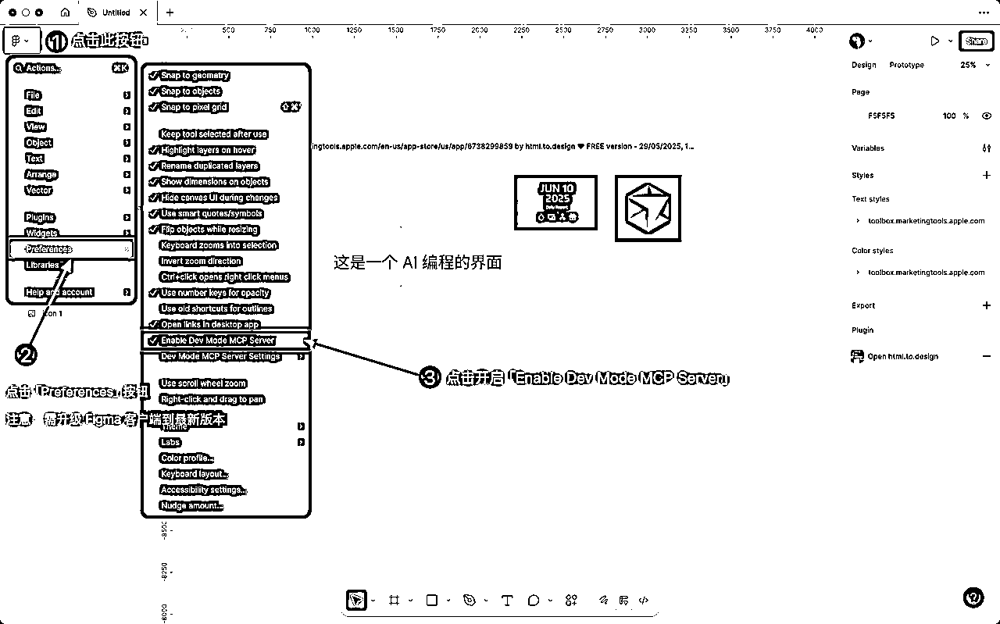
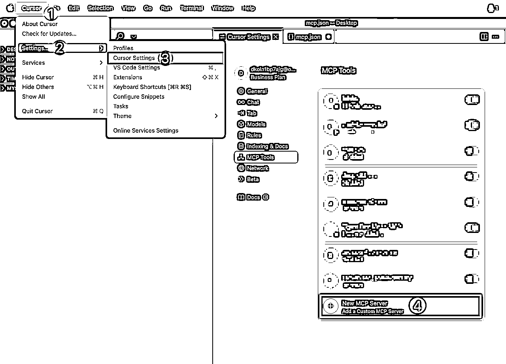
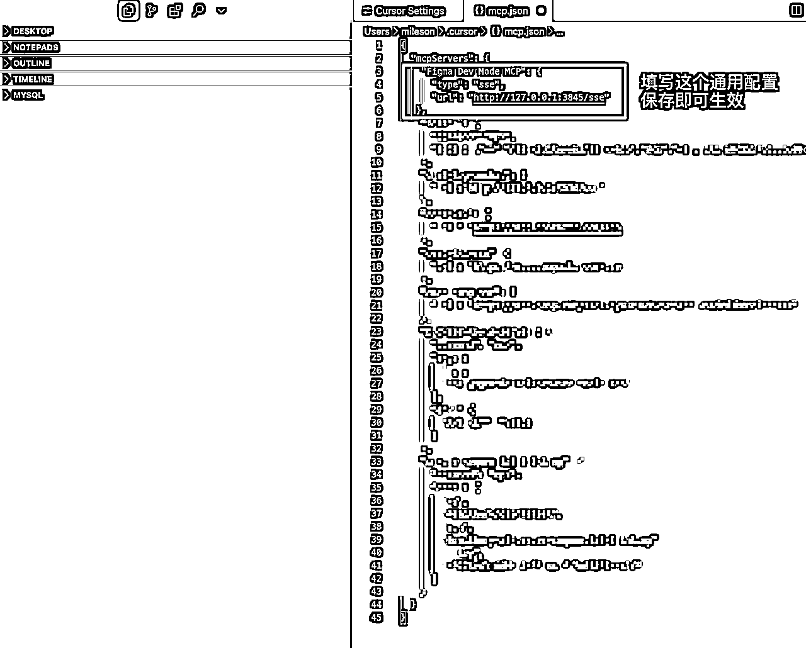
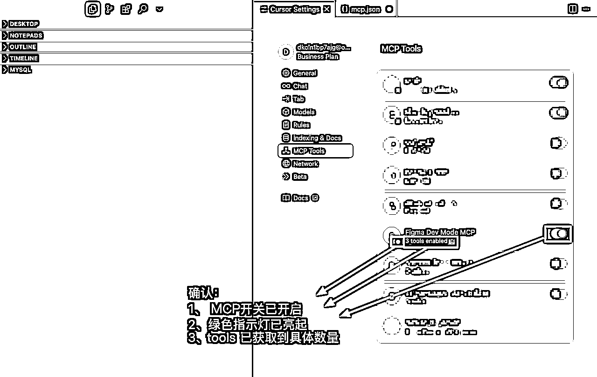
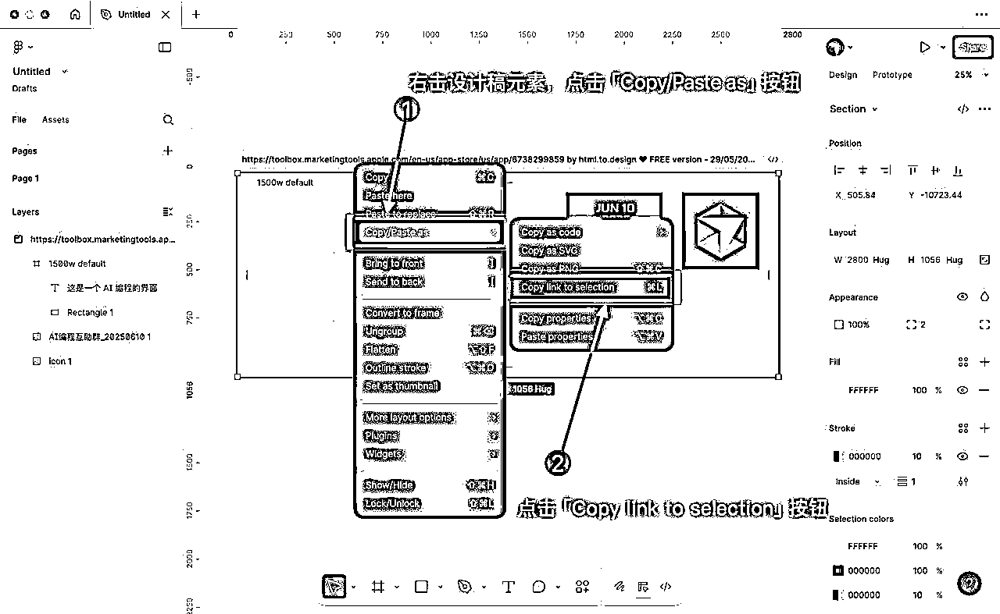
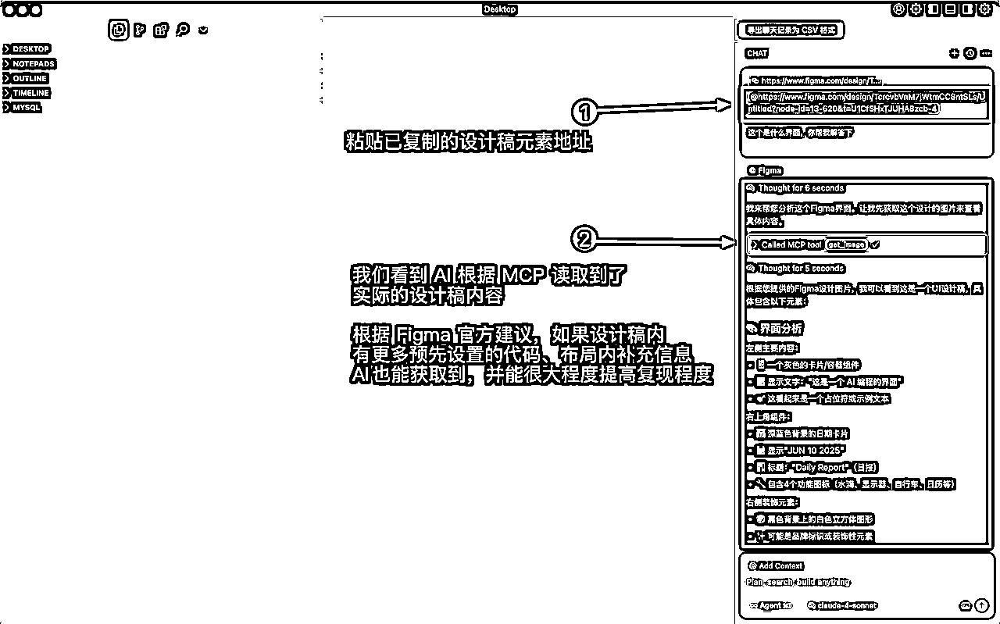

来源：https://chaojifeng.feishu.cn/docx/INzDdmA7oopBDhx3NXqcTvg6nVe
上周，Figma 官方发布了全新的基于开发模式下的 MCP 原生支持功能。相比原先的需要安装插件，然后保证端口一致之类的繁杂的各种操作的不稳定的第三方版本，提供了原生级别的的稳定服务、便捷使用、能力更强大的 MCP能力。
今天，我将通过图文的形式，保姆级教会你如何快速对接上这个 Figma 官方的 MCP，帮助你能够通过设计稿就能让 Cursor 等 AI 编程工具实现你所见即所得的想法！
首先，你需要将本地的 Figma 客户端，并将客户端更新到最新版本（即 version 125.4.9 以及以上）
然后在「设置页（Preferences）」内开启“Enable Dev Mode MCP Server”选项

打开 Cursor ，并前往 Cursor 设置页 ，点击「New MCP Server」按钮，添加 Figma MCP 配置

复制下述 MCP 配置，原文粘贴到 mcp.json 内，并保存即可
"Figma Dev Mode MCP": {
"type": "sse",
"url": "http://127.0.0.1:3845/sse"
},

最后，返回 Cursor 设置页 ，通过如下 3 要素 ，确认下 MCP 配置是否已激活：

配置完成 Figma MCP 后，返回 Figma 客户端内，右击打算实现的设计稿，并复制链接

将复制的链接粘贴到 Cursor 内，并进行对话，我们可以看到 Cursor 能准确读取到

最后，附上目前 Figma MCP 已支持的四大能力，帮助你后续更好的使用这款 AI 编程神器：
| MCP 能力 | 作用 | 使用场景 |
|---|---|---|
| get_code | 把当前选区转成一段可直接运行的界面代码——可在设置里选择 React + Tailwind 或纯 HTML/CSS 输出 | 新起一个页面骨架：在 Cursor 里选好画板→调用 get_code→模型继续补交互；省去手工还原像素的步骤 |
| get_variable_defs | 列出此选区实际用到的颜色、间距、字号等设计系统变量，带“名字 + 当前值 + 模式” | 想让 AI 写出的样式严格沿用你的设计标准，比如 color-primary，而不是把 #FF5630 写死进代码 |
| get_code_connect_map | 告诉AI“Figma 里的这个按钮＝仓库里哪一个真实组件文件”，依赖 Figma 的 Code Connect 设置 | 大型项目维护老代码：让 AI 复用现有 <Button> 而不是“又造一个轮子”，减少后期技术债 |
| get_image | 输出选区或整个画板的 PNG/JPEG（可指定倍率），给模型一个整体排版或视觉参考 | 复杂流程、响应式断点、或组件极多时先送一张鸟瞰图，让模型判断层次关系，再配合 get_code 针对关键组件写细节 |
希望本次的分享对你有所帮助：）
更多 Figma Dev MCP 资料可参考：
[1]《Guide to the Dev Mode MCP Server》官方英文原版教程：https://help.figma.com/hc/en-us/articles/32132100833559-Guide-to-the-Dev-Mode-MCP-Server
[2] 《Introducing our Dev Mode MCP server: Bringing Figma into your workflow》这篇介绍 MCP 技术理念的文章：https://www.figma.com/blog/introducing-figmas-dev-mode-mcp-server/